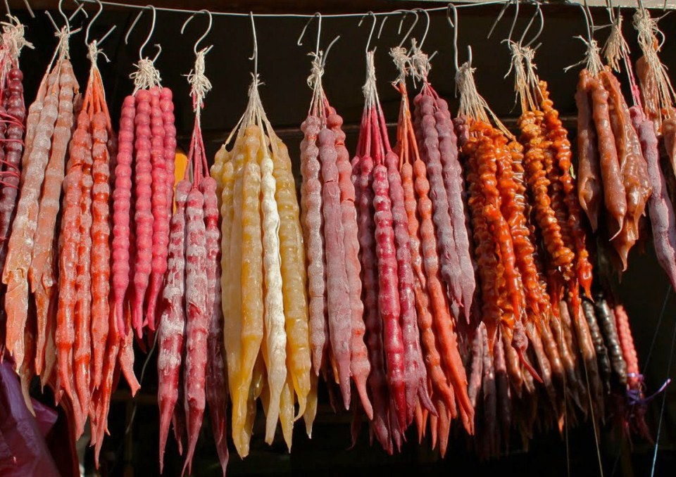
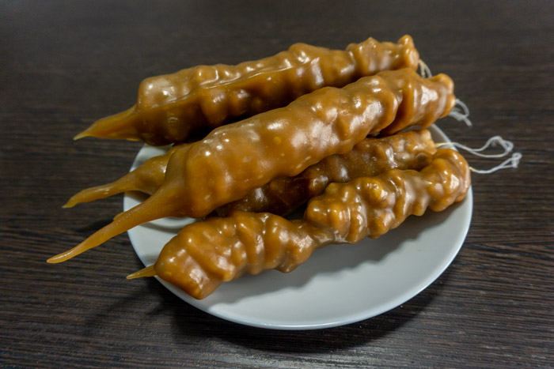
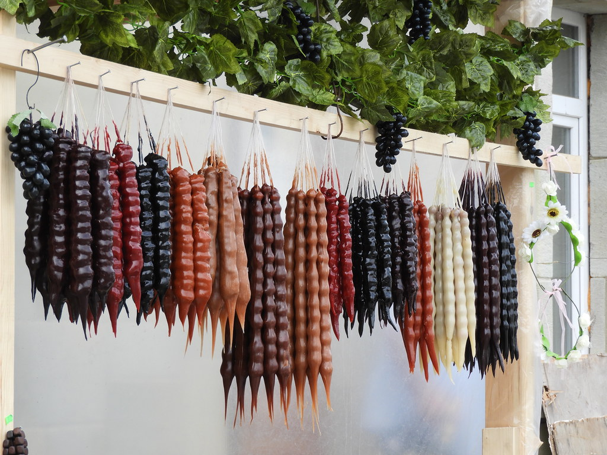

Churchkhela

Churchkhela Recipe: How to Make Georgian Candy
What is Churchkhela?
Before I jump into the churchkhela recipe, we really should tackle just exactly what churchkhela is if you don’t have much of an idea. And the answer to this question is actually fairly simple: churchkhela are strings of nuts that are coated in a concentrated grape juice mixture and left to cure for a few days (and up to a few months!).
In Georgia, churchkhela is traditionally made with walnuts. If you’ve browsed a few of the other Georgian recipes we’ve covered, you will likely realise that walnuts future heavily in Georgian cuisine. In fact, there is even a saying in Georgia that says “Georgians put walnuts into everything except their wine.” To remedy this, however, they have figured a way to combine grape juice and walnuts — just not in an alcoholic setting!
To make churchkhela, walnuts are threaded on a string and then dipped into the grape juice mixture. They are then hung to dry for a day or two, dipped again, and then hung to cure for a few more days until consumed.
Churchkhela are typically made in late summer and early autumn around the time of the grape harvest (rtveli) and are then are left to cure for a few months before being consumed around Christmas – which is celebrated on the 7th of January along the lines of the Georgian Orthodox Church.

Ingredients
- 120ml neutral oil, divided
- 150 grams flour, divided
- 2 litres 100% fresh grape juice, divided
- 250 grams walnut halves
Instructions
- In a large saucepan, heat 60 millilitres of oil over medium heat until shimmering. Whisking, add 75 grams of flour and cook, whisking constantly, until the roux darkens slightly in colour and gives off a lightly toasted smell, about 3-5 minutes.
- Whisking constantly, pour one litre of grape juice over the roux. The mixture will sizzle and seize as the juice is added but will loosen as more liquid is incorporated. Whisk continuously while incorporating in order to avoid lumps.
- Bring mixture to a boil and reduce heat to low, allowing to simmer, whisking occasionally to break up any lumps and prevent scorching on the bottom, until very thick and reduced by about half. This grape juice mixture is called tatara in Georgian.
- While the tatara is cooking, prepare the walnut strings. Using a needle and thread, tie a knot at the end of a thread, leaving a few centimetres at the end, and string walnut halves until you reach desired length. Traditionally, churchkhela is made with 25 walnut halves, but you can make them any length you choose. I find that 15 walnut halves are the most manageable. Once strung, leave a few centimetres at the top of the string in order to be able to hang the churchkhela to dry once dipped.
- Once the tatara is cooked and thickened, remove from heat and allow to cool for about five minutes, or unit it has thickened a bit more but is still quite viscous.
- Working one at a time, fully submerge walnut strings into the tatara, holding onto the top string and keeping it from the grape juice mixture, using a spoon to completely cover the walnuts, if necessary. Lift string from tatara, allowing excess to drip off for a few seconds (do not shake off the excess) before hanging to dry in a safe place.
- Allow churchkhela to dry for 24 hours before repeating the process, making a second batch of tatara, and dipping one more time.
- Allow churchkhela to hang to dry for at least 48-72 hours before eating (they can be stored at room temperature for up to three months). Remove the strings by pulling it through the walnuts before consuming. The churchkhela will darken in colour slightly as they dry.

Notes
Churchkhela are traditionally made with walnuts (and sometimes hazelnuts) and grape juice, but they really can be made with any kind of nut and any kind of fresh fruit juice using the same guidelines in this recipe, so feel free to experiment and be creative!
Return to Main Page